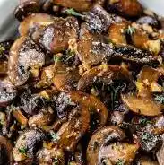

Mushrooms

Description
I made this recipe the same day I made my spicy honey lamb meal. It's a perfect side dish that requires little prep and cooking. The best thing is that the ingredients are already in the frying pan
so all you have to do is drop them in and cook for 3 minutes or to desired color!
Ingredients
You can get one container of mushrooms, sliced or not, from your local grocery store. As I mentioned before you can use the same frying-pan you used for cooking the spicy honey lamb
that you made earlier, or you can use any other meat you cooked. If you're vegan, or want to make it entirely separate from another dish you can use these ingredients.
- 1 container of mushrooms (sliced is optional)
- 1 tsp extra virgin olive oil
- 1/2 tsp paprika
- 1/2 tsp salt
- 1 tbsp onion powder
- 1 tbsp garlic powder
- (Optional) Use same frying-pan you used to cook the spicy lamb, or any meat you made tonight.
Steps
- Preheat Stovetop: Preheat stove top and set to low/low-medium and add your oil.
- Place mushrooms in the frying-pan (optional: Slice mushrooms): If you didn't get pre-sliced mushrooms you can set a cutting board and slice them up. When you're done you can place it in the frying-pan.
- Cook mushrooms: Let the mushrooms cook for a few minutes, or they get to the desired color. When you're done you can enjoy!